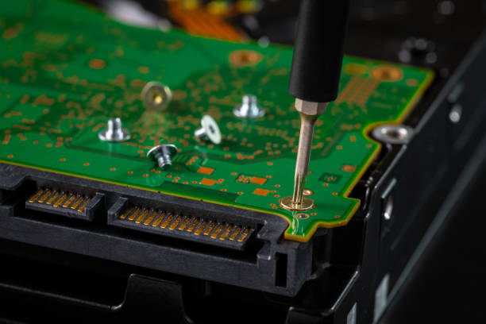

Discover the Secrets of Maximizing Efficiency with Mini PCs: The Ultimate Guide
Posted by on 2024-06-13
In today's fast-paced world, efficiency is key. Whether you're a student, a professional, or just someone looking to make the most of their time, finding ways to maximize efficiency is essential. One often-overlooked tool in the quest for efficiency is the mini PC.
Mini PCs are compact, powerful computers that can perform all the tasks of a traditional desktop or laptop computer but take up significantly less space. They are perfect for small offices, dorm rooms, or anyone looking to declutter their workspace.
But what sets mini PCs apart from their larger counterparts? The answer lies in their size and portability. Mini PCs are easy to transport from one location to another, making them ideal for those who need to work on-the-go. Additionally, they consume less energy than traditional computers, saving you money on your electricity bill.
So how can you maximize efficiency with a mini PC? The possibilities are endless. Here are some tips to help you get started:
1. Keep your workspace organized: With a smaller footprint than a traditional computer, it's important to keep your desk clutter-free when using a mini PC. Invest in cable management tools and storage solutions to keep things tidy.
2. Use cloud storage: Take advantage of cloud storage services like Google Drive or Dropbox to store your files securely and access them from anywhere with an internet connection.
3. Utilize productivity apps: There are countless apps available that can help streamline your workflow and boost productivity. From project management tools like Trello to note-taking apps like Evernote, find the ones that work best for you.
4. Customize your setup: Personalize your mini PC with accessories like an external monitor, keyboard, and mouse to create a comfortable working environment that suits your needs.
5. Stay updated: Make sure your mini PC's operating system and software are regularly updated to ensure optimal performance and security.
By following these tips and exploring the possibilities of maximizing efficiency with a mini PC, you'll be well on your way to getting more done in less time. Discover the secrets of maximizing efficiency with mini PCs today – the ultimate guide awaits!